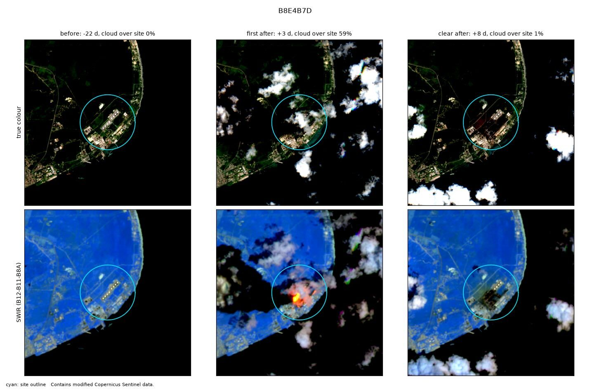
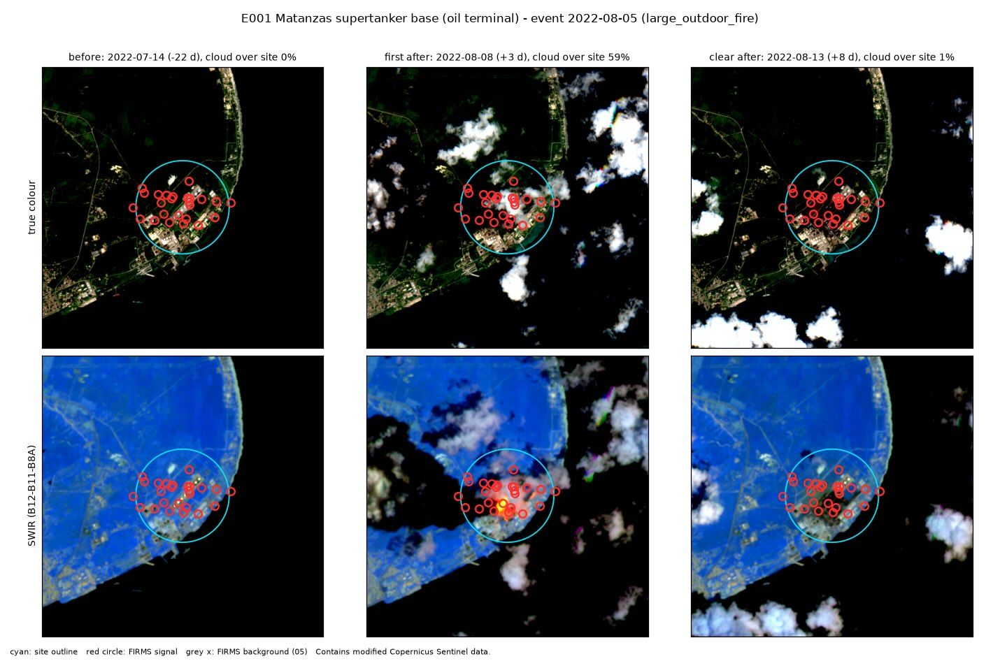

E001 · Large outdoor fire · Test half
Matanzas supertanker base (oil terminal)
Site level
Corroborated evidence: FIRMS+image
FIRMS signal from +30.9 h (6 detections in window); image labelled active_fire
City level
Corroborated
3 satellite passes with heat within 10 km. Expected: 0.0.
Location
- Site point
- 23.07444, -81.53778
- Basis
- Wikipedia infobox
- Uncertainty
- about 1.0 km
- OSM outline
- none accepted
- City point
- Matanzas (GeoNames 3547398): 23.0439, -81.5828
- City to site
- 5.7 km
FIRMS heat detections
- Coverage
- VIIRS_SNPP_SP:2022-08-04+5d
VIIRS_NOAA20_SP:2022-08-04+5d
MODIS_SP:2022-08-04+5d - Gaps
- VIIRS_NOAA21:5d
- At the site
- 25 detections in the 5 days around the event. Usual rate: 0.0 per 5 days.
- After the heat filter
- 25 count as fire (24 new, 1 anomalous). 0 usual heat.
- First signal
- +30.9 h from the event
- Strongest signal
- 250 MW fire radiative power
City check
- Verdict
- Corroborated
- Passes with heat
- 3 within 10 km of the city point, inside the time window
- Expected
- 0.0, from the area's own 30-day baseline (p = 0.0)
Sentinel-2
- Status
- Clear images before and after.
- Before
- 14 Jul 2022. Cloud over site 0%.
- First after
- 8 Aug 2022 (+3 d). Cloud over site 59%.
- Clear after
- 13 Aug 2022 (+8 d)
- Burn change (dNBR)
- Site minus surroundings: +0.093. 25% of the site above 0.27.
- Blind label
- active fire, high confidence
Images


Ground truth and sources
Cuban officials + intl. media (lightning-caused tank fire, burned ~5 days)